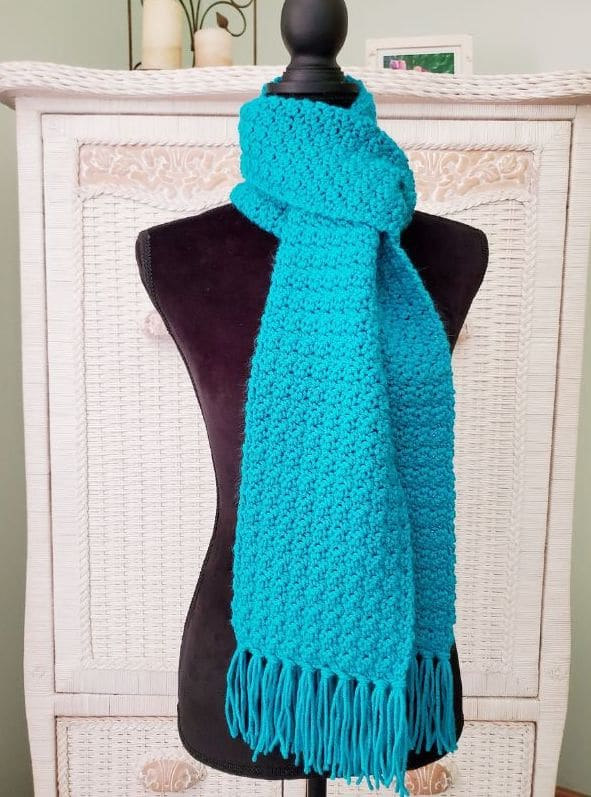

Scarf
Materials:
Yarn (weight 4 or medium works well) in your desired color(s)
Crochet hook (size recommended for your chosen yarn weight)
Scissors
Tapestry needle (optional, for weaving in ends)
Stitches:
Chain (ch)
Single crochet (sc)
Instructions:
Starting chain: Make a chain of stitches as long as you want your scarf to be wide. A good starting point is around 40 chains, but you can adjust this to your preference.
First row: Once you have your starting chain, turn your work. Skip the first chain stitch (the one closest to your hook), and then single crochet into each remaining chain stitch.
Turning and crocheting rows: At the end of the row, chain one (this chain counts as your first stitch for the next row), turn your work, and single crochet into each single crochet stitch across the row.
Repeat: Continue rows 2 and 3 until your scarf reaches the desired length.
Finishing: Once you're happy with the length, cut the yarn, leaving a long tail for weaving in. Weave the yarn tail through the last few stitches of the scarf to secure it. Repeat with the other end of the yarn.
Tips:
To add a fringe to your scarf, simply leave a longer tail when cutting the yarn at the end. Then, cut even lengths of yarn from this tail.
You can also change colors at the end of each row to create a striped scarf. Just tie the new color to the end of the old color and crochet over both ends together in the first stitch of the next row. Weave in the ends later.
For beginners:
This pattern uses basic crochet stitches, making it perfect for those new to crocheting.
If you're unfamiliar with the stitches, there are many helpful tutorials available online that can walk you through them visually YouTube: https://www.youtube.com/.
Customization:
This is a basic pattern, and there are many ways to customize it. Here are a few ideas:
Try different yarn weights and textures for a different look and feel.
Experiment with different stitch patterns. There are many resources online for free scarf crochet patterns that use various stitches https://sarahmaker.com/free-crochet-scarf-patterns/.
Add buttons or a loop and button for a closure.
With a little practice, you'll be crocheting beautiful scarves in no time!